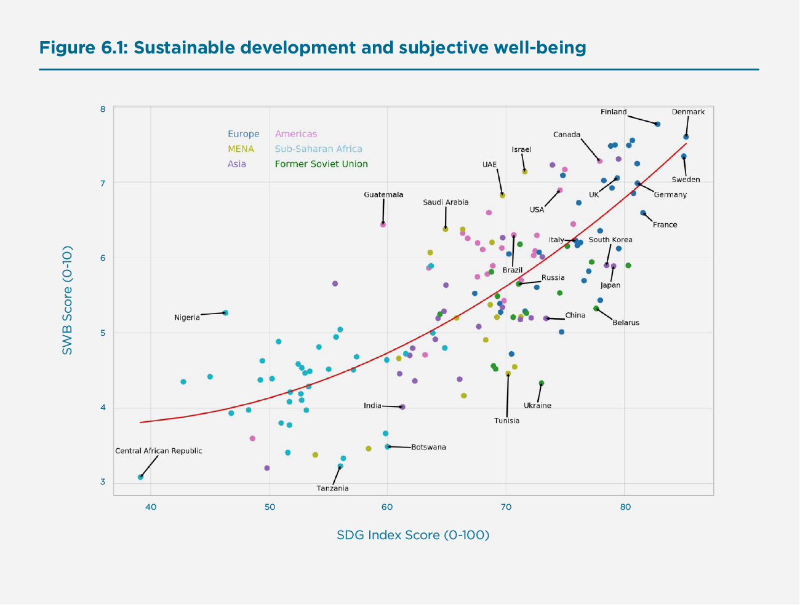
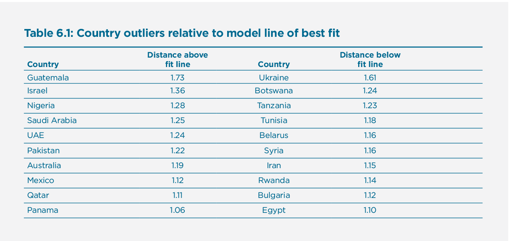
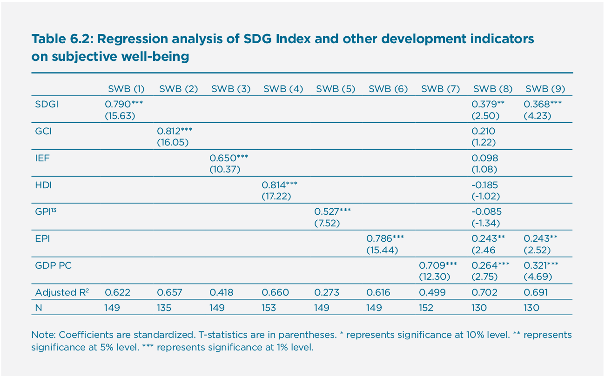
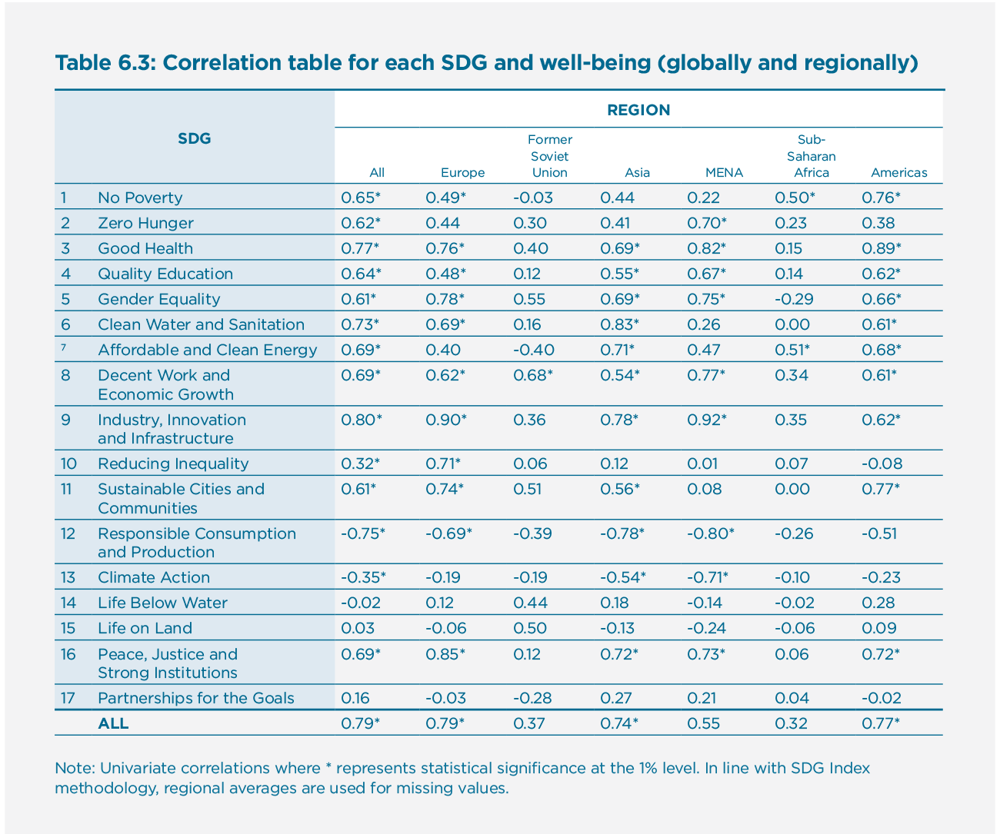
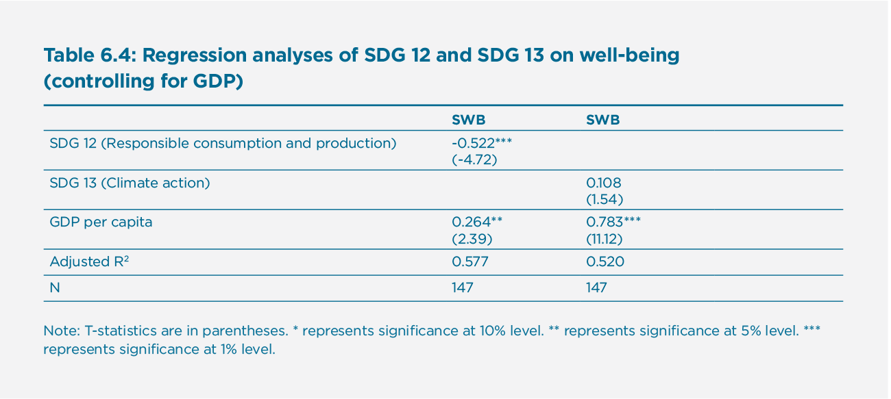
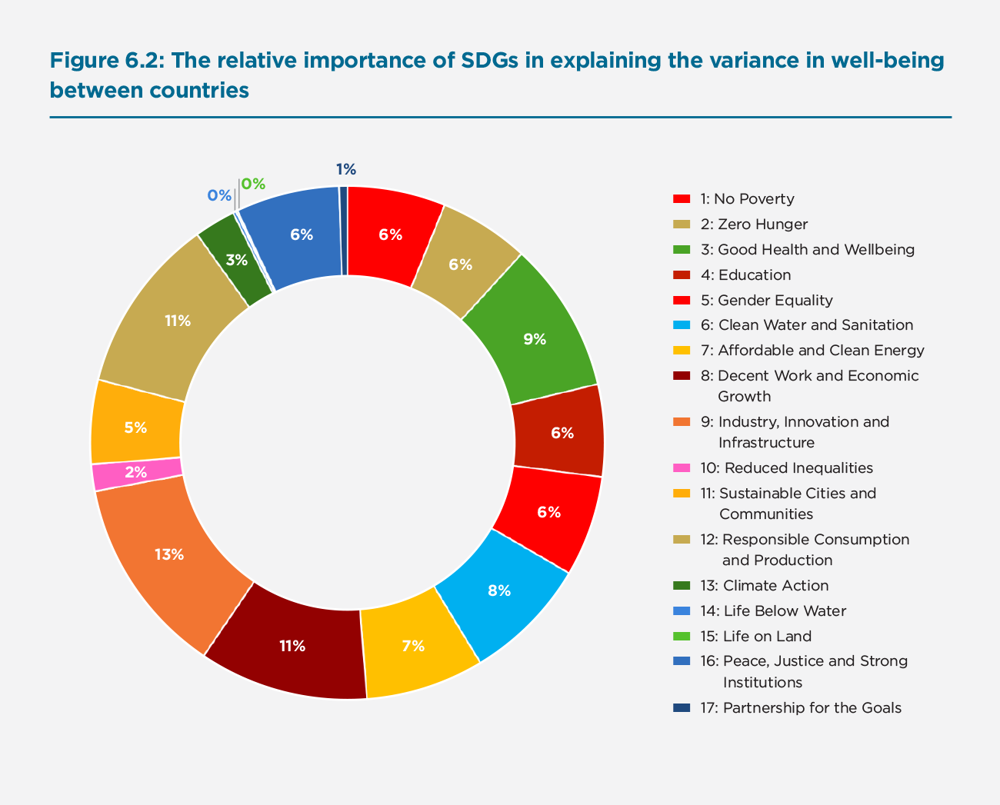
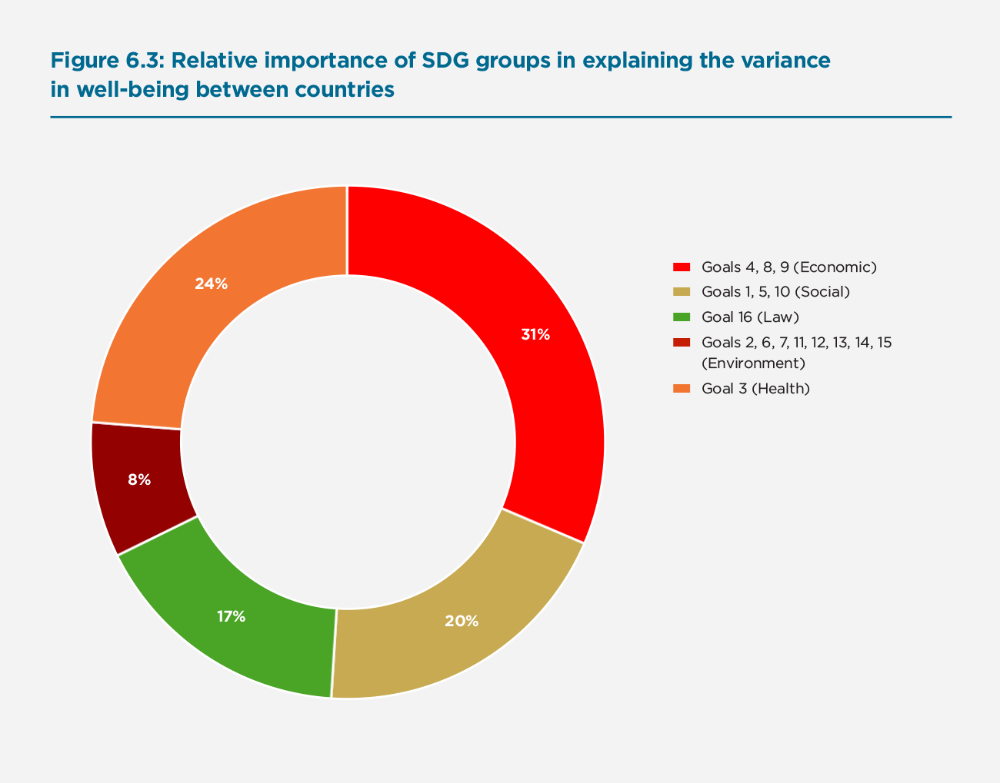
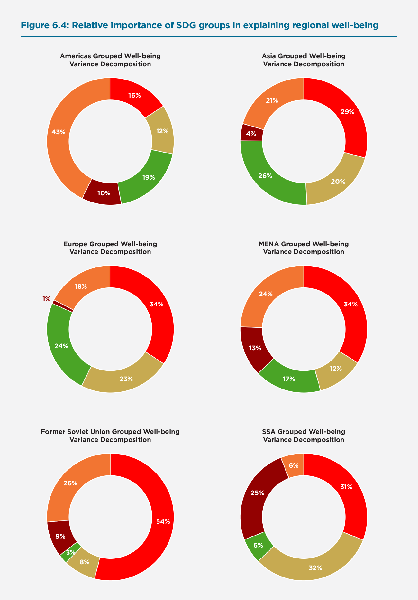
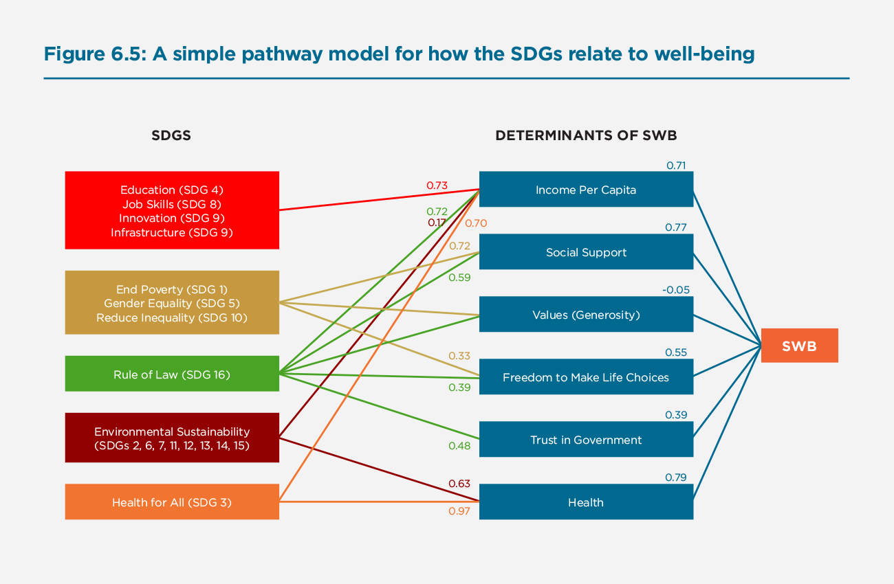

Sustainable Development and Human Well-Being
Introduction
This chapter explores the empirical links between the Sustainable Development Goals (SDGs) and human well-being. The SDGs were ratified in 2015 as the successor to the Millennium Development Goals and have a target date of 2030. The goals measure different aspects of the economic, social and environmental development within countries. To empirically explore the linkages between sustainable development and well-being we combine two major data gathering efforts. We leverage the SDG Index[1], which measures how far along countries are in the process of achieving the SDGs. We also use the Gallup World Poll, which is a survey that is representative of about 98% of the world’s population and includes an item on how people evaluate the quality of their lives, which we will henceforth refer to as subjective well-being (SWB). Data on other dimensions of subjective well-being, such as the experience of positive and negative emotions, will be referred to explicitly rather than as elements of a more broadly defined SWB. Combining the Gallup World Poll and SDG Index data sets enables us to empirically explore how sustainable development relates to the way people experience their lives.
Intuitively, making progress in terms of sustainable development is likely to benefit both people and planet. Detailed empirical work, however, may reveal some tensions where actions needed to achieve sustainability may challenge people into changing behaviours and potentially reducing their well-being (at least in the short run). In fact, large-scale social movements such as the “yellow vests” in France were initiated when additional fuel taxes were introduced. While fuel taxes are considered an effective way to induce more sustainable behaviour, they put additional pressure on the lifestyles and purchasing power of people living outside of major cities who require more use of automobiles given that there are less public transport options available to them. Alongside social movements such as the “yellow vests,” there are the pro-environment movements such as “Extinction Rebellion” that raise alarm bells over climate change and the need for drastic and immediate measures to reduce our reliance on carbon fuels. By unpacking the seventeen SDGs in relation to well-being, this chapter tries to take a closer empirical look at how sustainable development aligns with the interests of people and planet, but also where there may be inherent tensions that require more complex policy efforts in order to chart a course towards environmentally sustainable and socially equitable growth without reducing human well-being.[2]
A related empirical question concerns the relative importance of each of the SDGs in terms of driving human well-being. All SDGs are important—but some SDGs may be more relevant to well-being than others. This is of interest for a number of reasons. Those SDGs that are most strongly linked to advancing well-being could perhaps be prioritized if budgets are limited (and well-being considered a goal of policymaking). Advancing on SDGs that are negatively correlated with well-being metrics will likely require more complex policy action in order to alleviate other concerns. By unpacking the SDGs in terms of well-being, we also show how their relative importance may change over time and by regional context. The analyses reported in this chapter may provide some broad policy guidance to policymakers across the world’s regions that are keen to advance the well-being of both people and the planet.
In line with intuition, the countries with a higher SDG Index score tend to do better in terms of subjective well-being (SWB)—with the Nordic countries topping both rankings. In fact, there is a highly significant correlation coefficient of 0.79 between the SDG Index[3] and the SWB scores. This shows the importance of a holistic approach to economic development when trying to improve citizen well-being. Interestingly, the best fitting model to describe the relationship between the SDG Index and SWB takes a quadratic form indicating that a higher SDG Index score correlates more strongly with higher SWB at higher levels of the SDG Index. This would indicate that economic growth is an important driver of well-being at early stages but becomes less significant later in the development cycle. Put differently, this result implies increasing marginal returns to sustainable development in terms of human well-being.
A conceptual model that explores the pathways between sustainable development and well-being finds that the SDGs are strongly related to the ‘determinants of well-being’ as laid out in Chapter 2. These are income, social support, generosity, freedom, trust in government, and health. Among the different SDGs, however, we find much heterogeneity in how they correlate to SWB. In fact, some of the environmental goals are significantly negatively correlated with SWB. These are Goal 12 (responsible consumption and production) and Goal 13 (climate action). Moreover, there are significant regional differences in these correlations. For example, Goal 10 (reducing inequality) has a 0.71 correlation with SWB in Europe but is not correlated with SWB in many other regions. As such, these analyses reveal a number of intrinsic tensions between sustainable development and well-being that will hopefully stimulate further research and debate in order to inform policy action.
This chapter begins by discussing the headline correlation between the SDG Index and SWB. We analyse the quadratic relationship depicted and then show which countries significantly deviate from the main trend. We then also look at how SWB is related to other indices that measure progress to show that the SDG Index compares well with them. In the next section, the SDG Index is split into its 17 component goals and we analyse the varying relationships with well-being. Here we discuss the trade-offs that appear when we dig deeper into the relationship between sustainable development and well-being. We finish this section by conducting a variance decomposition analysis to show which goals contribute most strongly to the variation in well-being between countries. Finally, we look into the determinants of well-being and analyse them as pathways by which the sustainable development goals affect well-being. Generally, this chapter finds that the SDGs are a critically important but complex set of targets as governments increasingly appreciate the overarching goal of improving the well-being of their populations.
Is sustainable development conducive to human well-being?
For our analyses, we use the standard measure of well-being used in the World Happiness Report rankings and most other research on the topic. The survey item asks respondents to value their current lives on a 0 to 10 scale, with the worst possible life as a 0 and the best possible life as a 10. Countries are coded to represent the six regions they belong to: Europe, Middle East and Northern Africa, Americas, Sub-Saharan Africa and Former Soviet Union. The G7 and BRICS countries are also labelled, as well as some of the outlier countries.
Figure 6.1 shows the scatterplot for the SDG Index and SWB for all countries in the dataset. The SDG Index and SWB have a highly significant correlation coefficient of 0.79, and interestingly, the line of best fit is not linear but quadratic. In Appendix, we show that the quadratic fit is statistically superior compared to a pure linear fit, as well as higher-powered models as borne out when applying the Bayesian information criterion and Akaike information criterion to test the relative quality of model fits. The notion of increasing marginal returns to sustainable development aligns with economic intuition and prior research on the economics of well-being. As countries become more developed, a higher SDG Index score is associated with an ever higher SWB score. This implies that economic activity is more important for well-being at lowers levels of economic development. As countries become richer the well-being of their citizens stagnates unless further economic growth is more sustainable by, for example, addressing inequality and improving environmental quality.
Figure 6.1: Sustainable development and subjective well-being

Our measure of SWB is an evaluative measure of well-being and the survey responses may differ from emotional measures of well-being, especially when looked at in relation to economic measures such as income and development.[4] As such, in the Appendix we also report on the relationship between the SDG Index and measures of emotional well-being. The Gallup World Poll includes measures of positive emotions such as “enjoyment” and “smile or laugh,” as well as negative emotions such as “worry”, “sadness”, and “anger”. Correlating an index of positive emotional experiences with the SDG Index scores leads to a correlation coefficient of 0.27—while statistically significant, this indicates a much weaker empirical link between achieving the SDGs and the experience of positive emotions as compared to life evaluations already examined. This is less the case for an index of negative emotional experiences, for which we obtain a correlation coefficient of -0.57 suggesting that countries that are not doing well in terms of the SDGs also tend to have populations that are experiencing more negative emotions. In general, these results are in line with the notion that evaluative measures correlate more strongly with economic measures such as income, development, and inequality than emotional measures of well-being.[5]
Table 6.1: Country outliers relative to model line of best fit

Table 6.1 show the list of countries that deviate most from the trend line. The countries significantly above the line of best fit clearly punch above their weight in terms of happiness relative to where the model would expect these countries to be given their scores on the SDG Index. Conversely, countries significantly below the line of best fit punch below their weight in terms of well-being relative to where we expect their average levels to be given their score on the SDG Index. These empirical observations raise interesting questions on why these countries’ average well-being levels deviate substantially from the trend. These results also indicate that there are a number of aspects that drive human well-being that are not fully captured by the SDGs.
How well do the SDG Index and other development indices explain well-being?
In this section, we investigate how well the SDG Index relates to human well-being. To be able to compare and contrast the SDG Index (SDGI)[6] we also include the Human Development Index (HDI)[7], Index of Economic Freedom (IEF)[8], Global Peace Index (GPI)[9], Global Competitiveness Index (GCI)[10], Environmental Protection Index (EPI)[11], and GDP per capita.[12]
Table 6.2 indicates that the SDG Index and other indices of development are positively and significantly correlated with SWB. SWB is most strongly correlated with the Human Development Index, but the statistical confidence intervals around these estimates suggests that there is no significant difference with the coefficients on the SDG Index, Global Competitiveness Index, Environmental Protection Index, and even with GDP per capita. The Index of Economic Freedom and the Global Peace Index are, however, significantly less correlated with SWB as compared to the aforementioned indices.
The Human Development Index measures the level of welfare within a country by looking at three different indicators: Life Expectancy Indicators, Educational Attainment Indicators, and Standard of Living Indicators. The Life Expectancy Indicator refers to life expectancy at birth. Educational Attainment consists of the adult literacy rate and gross enrollment ratio. Standard of Living is measured by GDP per capita. These data that make up the HDI have much overlap with what the SDG Index measures (correlation of 0.92 between the HDI and the SDG Index).
Table 6.2: Regression analysis of SDG Index and other development indicators on subjective well-being[13]

The Global Competitiveness Index consists of the following 12 pillars: Institutions, Infrastructure, ICT adoption, Macro Stability, Health, Skills, Product Market, Labour Market, Financial System, Market Size, Business Dynamism, and Innovation Capability. This is a comprehensive measure that also has significant overlap with the SDG Index and HDI. The correlations are 0.87 and 0.92 respectively.
The Environmental Protection Index has twenty-four indicators organized into ten issue categories and two policy objectives. These ten issue categories cover: Biodiversity & Habitat, Forests, Fisheries, Climate & Energy, Air Pollution, Water Resources, Agriculture, Heavy Metals, Water & Sanitation, and Air Quality. The EPI is a comprehensive measure of the natural environment that is much wider in scope than the environmentally oriented SDGs.
GDP per capita and the Index of Economic Freedom are also positively correlated with SWB, but less so than the aforementioned indicators. This is perhaps to be expected: economic growth is only one of the many drivers of well-being. In turn, the Index of Economic Freedom gauges how conducive the socio-economic environment is for economic growth.
Finally, we note the relatively weak correlation between the Global Peace Index and SWB. The GPI is a very broad measure that considers international and domestic conflict, crime, political instability, number of police per 100,000 citizens, and nuclear and heavy weapons capability, among others. The relatively low correlation with SWB and other development indices such as the GPI (see correlation table in Appendix) may be the result of more developed nations also being more likely to have nuclear capability and perhaps a larger police force while no less reports of crime than developing nations. It would appear that the GPI is constructed in a way that does not lend itself easily to gauge the common sense that safe environments to live in would be a necessary precursor to happy communities.
In column (8) of Table 6.2 we include all these development indices in a single regression with SWB as the dependent variable. As noted before, some of these indices are strongly correlated so this multivariate regression suffers from multicollinearity. The results of this exploratory analysis suggest that the SDG Index remains significant alongside the Environmental Protection Index and GDP per capita. Other tests show that the four insignificant variables can be safely omitted, such that the model reported in column (9) that only includes the SDG Index, Environmental Protection Index and GDP per capita provides a sufficient explanation.[14]
Unpacking the SDGs in relation to well-being
In this section, we unpack the SDGs and consider the seventeen goals separately in relation to well-being. While the overall SDG Index may correlate strongly with human well-being, the question remains whether some SDGs may be more or less conducive to well-being. We start by considering the basic univariate correlations between each SDG and well-being globally before doing the same by region of the world. Later in this section we apply a variance decomposition method to consider the relative importance of each SDG in explaining the variance in well-being between countries. Both these approaches reveal important heterogeneity in how the SDGs relate to well-being.
How does each SDG relate to well-being?
In Table 6.3 we report on how each SDG correlates with well-being both globally and regionally. As expected from the aforementioned general results, we find that most SDGs correlate strongly and positively with higher well-being. At the same time, by unpacking the SDGs we discover much heterogeneity in how some of the SDGs relate to well-being. In fact, we find SDGs 14 (Life below water), 15 (Life on land), and 17 (Partnerships for the goals) to be generally insignificant. Strikingly, we find that SDGs 12 (Responsible consumption and production) and 13 (Climate action) are significantly negatively correlated with human well-being.
Table 6.3: Correlation table for each SDG and well-being (globally and regionally)

When looking at the relationship between SDGs and well-being by region we detect further levels of heterogeneity in how individual SDGs relate to well-being in different contexts. It is, however, important to note that considering these data by region reduces the number of observations and therefore both the precision of the coefficient and the statistical power to report significant differences. As Figure 6.1 revealed visually, there is a stronger link between the SDG Index and well-being at higher levels of economic development. In Table 6.3 we indeed find that the general correlation between the SDGs and well-being is considerably lower in regions with mostly developing nations. In fact, only for Europe, Asia, and the Americas do we pick up a strong statistically significant correlation between the SDG Index and well-being. When looking at the SDGs individually, we pick up even more variation in how some SDGs are more strongly correlated than others with well-being. Some noteworthy regional results include (1) the important role of SDG 8 (decent work and economic growth) for countries in the former Soviet Union; (2) the relative importance of SDG 9 (industry, innovation and infrastructure) for nations in Europe and the MENA region; and (3) SDG 10 (reducing inequality) appears to only matter significantly for the European nations. These regional correlations need to be taken with due caution given the relatively low number of observations available but, taken together, Table 6.3 paints a vivid picture of the varied and complex ways in which the SDGs relate to human well-being and how these pathways are highly context specific.
Are there trade-offs between the SDGs and human well-being?
Table 6.3 reveals that SDG 12 (responsible consumption and production) and SDG 13 (climate action) have, in fact, strong negative correlations with self-reported measures of human well-being. Moreover, these negative correlations appear to hold for each one of the world’s regions and therefore merit more academic and policy attention.
Studying the indicators underlying the SDG Index shows that SDG 12 (responsible consumption and production) is determined by municipal solid waste, electronic-waste generated, production-based and imported SO2-emissions, nitrogen production footprint, net imported emissions of reactive nitrogen, and non-recycled municipal solid waste. Based on these indicators, SDG 12 may be highly correlated with the quantity of waste created through consumption and production rather than the proportion of responsible production and consumption. Since economically developed nations produce more waste but also tend to have higher levels of well-being, this may help explain why SDG 12 has such a strong negative correlation with well-being. If responsible consumption and production is also taken to mean less consumption and production in the first place, it tends to go hand in hand with economic contexts that are generally lower in terms of well-being. However, this is not what we find to be the case when regressing SDG 12 on well-being controlling for the general level of economic development. As Table 6.4 suggests, SDG 12 continues to correlate negatively with SWB even when taking into account the general level of economic development as measured using GDP per capita. This analysis therefore suggests that advancing responsible consumption and production comes with a trade-off in terms of (short-term) well-being as self-reported by citizens.
SDG 13 (climate action) is determined by per capita energy-related CO2 emissions, technology adjusted imported CO2 emissions per 100,000 people, people affected by climate related disasters, CO2 emissions embodied in fossil fuel exports, and effective carbon rate from all non-road energy excluding emissions from biomass. As was the case with SDG 12, countries that are more economically developed tend to pollute more while also having higher well-being. Climate action here would imply not only qualitative actions to reduce CO2-emissions (while maintaining general production levels), but climate action would also benefit from quantitative reductions in productive capacity that would lead to structural economic changes that would be in tension with other drivers of well-being. Unlike SDG 12, however, we find that accounting for the general level of economic development turns a negative correlation into an insignificant one. As reported in Table 6.4, this suggests that the underlying measures for climate action are strongly correlated with the level of economic development in the first place which, in turn, drives the relationship with well-being (more so than climate action by itself).
Table 6.4: Regression analyses of SDG 12 and SDG 13 on well-being (controlling for GDP))

More generally, it is possible that neither of these environmental SDGs properly captures how people actually value the environment. The Environmental Protection Index (EPI) has a strong positive correlation with subjective well-being, as shown in Table 6.2.[15] This is supported by earlier work[16] finding that subjective well-being is negatively influenced by poor air quality, that people are willing to pay for observably cleaner air, and that time in nature enhances well-being and is necessary for humanity.[17] These research insights indicate that well-being is positively correlated with the outcome of environmental policies, even if it is not necessarily positively correlated with the efforts required of the policies. A large-scale study assessed possible explanations for this environmental paradox[18], finding that it is plausible that (1) there is a time lag after ecosystem degradation before well-being is affected; (2) technology and innovation have to some extent decoupled well-being from nature; and that (3) well-being is dependent on provisioning services, such as food production, that are increasingly putting pressure on our ecosystem. Such observations may help explain why ecological degradation has not negatively impacted human well-being even though people depend on ecosystem services.
Trade-offs between the SDGs and SWB can also arise as a result of trade-offs between different SDGs. Arguably SDGs 11, 13, 14, 16, and 17 continue to have negative trade-offs and non-associations with other SDGs.[19] The highly positive links between goals 11 and 16 and human well-being may possibly compensate for these intra-SDG trade-offs, but policy-makers may find pursuing SDGs 13, 14, and 17 more difficult due to the negative or insignificant correlation with the well-being of current generations. Needless to say, however, the urgency of climate change does require action to ensure the well-being of future generations.[20]
Variance decomposition analysis of the SDGs in relation to well-being
In this section, we apply variance decomposition to explore the relative importance of each SDG in explaining the variance in well-being between countries. This method, called “dominance analysis”, investigates the relative contribution to the variance explained in well-being (R2) for a given set of predictors—in this case the 17 SDGs.[21] One important assumption being made in such an analysis is that it forces the SDGs to explain all of the variance in well-being between countries. There are also a number of important limitations in that it hinges on there being variance in the first place, and yet the measurements for some SDGs do not vary much. Moreover, we are limited in terms of number of observations as we can only consider the 149 countries available in the data (or less when looking at regions). In line with the SDG Index approach, we impute missing SDG values with regional values when necessary rather than lose observations.[22]
Figure 6.2 presents the results of the variance decomposition and suggests large differences in how each SDG contributes to explaining the variance in well-being between countries. This figure paints a picture that aligns closely with the correlation coefficients reported in Table 6.3.
Figure 6.2: The relative importance of SDGs in explaining the variance in well-being between countries

SDGs 10, 14, 15 and 17 would appear to contribute negligibly to explaining variation in well-being across the globe. On the other hand, the greatest explanatory power seems to lie with SDGs 3, 8, 9, and 12. SDG 8 (decent work and economic growth), SDG 9 (industry, innovation and infrastructure), and SDG 12 (responsible consumption and production) each explain 10% or more of the variance. It is important to note, of course, that SDG 12 (as well as SDG 13) are negatively correlated with well-being, as was shown earlier on in Table 6.3.
Variance decomposition analysis of regional SDG groups in relation to well-being
In these analyses, we group the SDGs into Economic (4,8,9), Social (1,5,10), Health (3), Law (16), and Environmental goals (2, 6, 7, 11, 12, 13, 14, 15). Figure 6.3 first shows the results for how well these SDG groups explain the variance between all countries. In Figure 6.4 we show the results by region.
Figure 6.3: Relative importance of SDG groups in explaining the variance in well-being between countries

Figure 6.4: Relative importance of SDG groups in explaining regional well-being

The general takeaway from the regional variance decomposition analyses is that there is much regional heterogeneity hidden behind a global analysis, with the regional context driving which SDGs are most important in explaining the variance in well-being between countries in the region. In Europe (N=33), and especially in the countries of the former Soviet Union (N=15), we find the great importance of the Economic SDGs in explaining regional variation in well-being. In Asia (N=23) we find a fairly balanced role for the Economic, Law, Social, and Health SDG groups in explaining regional differences in well-being. In the Americas (N=23) we find that Health plays the most important role in driving regional variation in well-being. The results for Sub-Saharan Africa (N=38) point towards the Social and Economic SDGs as playing the largest roles in explaining regional differences, but the Environmental SDGs also play a large role, especially in comparison to other regions. For the countries in the MENA region (N=17) we find a more balanced picture with the Health and Economic SDGs driving most of the variation, but an important role as well for the Social, Law, and Environmental SDGs.
It is important to reiterate that these variance decomposition analyses are limited by their methods and the number of observations. As such these results are exploratory and solely aim to stimulate thinking and further research on how the SDGs relate to human well-being—and how general analyses may hide important heterogeneity when looking at individual SDGs and in the context of different regions.
A simple baseline theory of SDGs and SWB
In this section, we propose a simple conceptual model of how the SDGs may shape well-being by way of the six well-being determinants as laid out in Chapter 2. These are Income, Social support, Generosity, Freedom to make life choices, Trust in government and business, and Healthy life expectancy.
The arrows in the model represent linear correlations between the five aforementioned SDG groups and the six well-being determinants. We show those relationships that we believe best highlight the most relevant pathways. In the Appendix, we present a general correlation table for all possible links. In terms of the determinants of well-being we find that the strongest correlations to well-being are Income per capita, Social support, and Health. This is intuitive, but is also a result of having good measures for these features. Freedom to make life choices and Trust in government come in next. The measure for Values is insignificant but we note that this is likely to be a result of generosity being very hard to measure.
Three of the SDG groups have strong positive correlations with Income per capita. Unsurprisingly, these are the groups that capture Economic features (SDGs 4, 8 and 9), Law (SDG 16), and Health (SDG 3). The goals representing the Environment (SDGs 2, 6, 7, 11, 12, 13, 14, 15) also have a positive correlation with Income per capita but we note that it is lower at 0.17. These pathways are a very important route for the SDGs to affect well-being because of the strong relationship between Income per capita and SWB. Social support, another strong determinant of SWB, is very positively related to goals representing social equality (SDGs 1, 5, and 10). Counter-intuitively, we note the lower correlations between this group and the SWB determinants of Values (Generosity) and Freedom to make life choices. The Rule of Law has a similar relationship with these three determinants as the Social SDGs group. Finally, the health determinant has a correlation of close to 1 with the Health SDG. We see that the Environmental group is quite important for Health too with a positive correlation of 0.63.
Figure 6.5: A simple pathway model for how the SDGs relate to well-being

Conclusion
This chapter has studied the empirical relationship between the SDGs and subjective well-being using data from the SDG Index and the Gallup World Poll. There is a strong correlation between achieving sustainable development and self-reported measures of well-being. Moreover, the analyses indicate that there are increasing marginal returns to sustainable development in terms of well-being.
Splitting the SDG Index into its 17 component goals allowed for analysing possible trade-offs between sustainable development and well-being. While most SDGs were positively correlated with well-being, goal 12 (responsible consumption and production) and goal 13 (climate action) were negatively correlated with SWB. However, the Environmental Protection Index is positively correlated with SWB, suggesting that the outcome of environmental policies is positively correlated with SWB, even if the process of reaching those policies may not be. This raises the challenge of policy action in these areas since they run counter to the subjective well-being of important groups in society. Given that lowering well-being erodes the support for incumbent governments[23] this makes such policies even more difficult to implement. A recent report by the OECD attempts to address this challenge by proposing climate change mitigation through a well-being lens and putting people at the centre of climate action.[24]
We have studied the link between the SDGs and SWB of the current generations. Future research should investigate the extent to which self-reported SWB metrics account for the well-being of future generations. This is especially relevant when considering SDG 12 (responsible consumption and production) and SDG 13 (climate action). Implementing these policies requires intergenerational reciprocity, which has been shown to depend on the behaviour of previous generations.[25] To be able to assess the extent to which self-reported measures of well-being integrate longer-term aspects of well-being, including the well-being of future generations, is a particularly important limitation for this line of work.
This work also does not address international dynamics. The sustainable development of a country may come at a cost to other countries, or the actions of countries may influence the well-being in others.[26] Furthermore, the model of linking SDGs with well-being assumes only direct relationships. Some recent work shows that addressing SDGs have knock-on effects for other SDGs.[27] Another dynamic that has not been discussed is the extent to which the well-being of populations may itself exert influence on their country’s approach to development. Changes in well-being have been documented to have wide-ranging effects on economic, social, and health outcomes.[28] These objective benefits of subjective well-being include pro-social behaviours. As such, there is an urgent need to combine the SDG and SWB research and policy agendas to generate solutions that work for both people and planet and help accelerate sustainable development.
References
Bennett, N.J., Cisneros-Montemayor, A.M., Blythe, J. et al. (2019): Towards a sustainable and equitable blue economy. Nature Sustainability, 2, 991–993 doi:10.1038/s41893-019-0404-1
Azen, R., and Budescu, D. V. (2003): The dominance analysis approach for comparing predictors in multiple regression. Psychological Methods, 8, 129-48.
Deaton, A., and Kahneman, D. (2010): High income improves evaluation of life but not emotional well-being. Proceedings of the National Academy of Sciences, 107 (38) 16489-16493.
De Neve, J-E, Diener, E., Tay, L., and Xuereb, C. (2013): The Objective Benefits of Subjective Well-Being. In Helliwell, J., Layard, R., and Sachs, J. (eds) World Happiness Report, New York: Sustainable Development Solutions Network.
Helliwell, J., Layard, R., and Sachs, J. (2019): World Happiness Report 2019, New York: Sustainable Development Solutions Network.
International Council for Science (ICSU) (2017). A Guide to “SDG” Interactions: From Science to Implementation (). Paris, France: International Council for Science (ICSU).
Kroll, C., Warchold, A., and Pradhan, P. (2019): Sustainable Development Goals (SDGs): Are we successful in turning trade-offs into synergies? Palgrave Communications (doi: 10.1057/s41599-019-0335-5).
Levinson, A. (2012): Valuing public goods using happiness data: The case of air quality. Journal of Public Economics, 96, 869-880, 2012.
Luechinger, S. (2009): Valuing air quality using the life satisfaction approach. Economic Journal, 119, 482-515.
OECD (2019): Accelerating Climate Action: Refocusing Policies through a Well-being Lens, OECD Publishing, Paris, https://doi.org/10.1787/2f4c8c9a-en
Powdthavee, N., Burkhauser, R., and De Neve, J.-E. (2017): Top incomes and human well-being: Evidence from the Gallup World Poll, Journal of Economic Psychology, 62, 246-257.
Sachs, J., Schmidt-Traub, G., Kroll, C., Lafortune, G., and Fuller, G. (2019): Sustainable Development Report 2019. New York: Bertelsmann Stiftung and Sustainable Development Solutions Network (SDSN).
Schmidt-Traub, G., Moff, H., and Bernlöhr, M. (2019): International spillovers and the Sustainable Development Goals (SDGs): Sustainable Development Solutions Network (SDSN).
Stern, N. (2015): Why are we waiting? The logic, urgency, and promise of tackling climate change, MIT Press.
Stern, N. (2018): Public economics as if time matters: Climate change and the dynamics of policy. Journal of Public Economics, 162, S.I., 4-17.
Wade-Benzoni, K.A. (2002): A golden rule over time: Reciprocity in intergenerational allocation decisions, Academy of Management Journal, 45, 1011-30.
Ward, G. (2020). Happiness and Voting: Evidence from Four Decades of Elections in Europe. American Journal of Political Science. https://doi.org/10.1111/ajps.12492
Williams, F. (2017): The Nature Fix: Why Nature Makes us Happier, Healthier, and More Creative, 1st edition, W. W. Norton Company.
Raudsepp-Hearne, C., Peterson, G.D., Tengo, M., Bennett, E.M., Holland, T., Benessaiah, K., MacDonald, G.K., and Pfeifer, L. (2010) Untangling the Environmentalist’s Paradox: Why Is Human Well-being Increasing as Ecosystem Services Degrade? BioScience, Vol. 60, No. 8.
Endnotes
See Sachs et al. (2019) ↩︎
See for instance Bennett et al. (2019), Kroll et al. (2019) ↩︎
Note that the SDG Index is modified to remove the SWB score, which is one of the indicators for SDG 3 (Health and Wellbeing). Given the large number of variables that make up the SDG Index, we find that leaving in or taking out the SWB variable does not meaningfully impact any results. ↩︎
See Deaton and Kahneman (2010) ↩︎
See Powdthavee, Burkhauser, and De Neve (2017) ↩︎
In this section, we use the SDG Index scores uncorrected for their inclusion of the SWB measure (as part of SDG 3) in order to be able to compare it as such with the other development indicators. ↩︎
HDI data comes from its 2019 report. ↩︎
IEF data comes from its 2019 report. ↩︎
GPI data comes from its 2019 report. ↩︎
GCI data comes from its 2019 report. ↩︎
EPI data comes from its 2018 report. ↩︎
GDP per capita data are taken from the World Happiness Report 2019 data file available at https://worldhappiness.report/ed/2019/ ↩︎
For the sake of ease in comparison between indicators, we report the opposite sign value for this coefficient since the GPI tabulates lower scores as implying more peace. ↩︎
An F-test on the four insignificant indices reveals F(4,120) = 1.85 with p-value = 0.1228 suggesting that we can omit these four indices. ↩︎
The Environmental Protection Index (EPI) is a more comprehensive measure of the environment that goes further than the environmentally oriented SDGs, so it may help in explaining the complex relationship between environment, environmental policies and human well-being. The indicators for the EPI clearly affect a larger range of SDGs: Goals 2, 6, 7, and 11-15 take the same inputs as EPI. In fact, SDGs 6, 7, and 13-15 are the ones that most represent components of the EPI. Out of these, 6 and 7 have strong positive correlations with SWB while 13 has a moderately negative correlation, and 14 and 15 are statistically insignificant. ↩︎
See for instance Levinson (2012) and Luechinger (2009) ↩︎
See Williams (2017) ↩︎
See Raudsell-Hearne et al. (2010) ↩︎
See Kroll et al. (2019) ↩︎
See for instance Stern (2015 and 2018), OECD (2019) ↩︎
See Azen and Budescu (2003) ↩︎
Imputation with regional values is most relevant with regards goal 14 (life below water). ↩︎
See Ward (2020) ↩︎
See OECD (2019) ↩︎
See Wade-Benzoni (2002) ↩︎
See Schmidt-Traub et al. (2019). ↩︎
See ICSU (2017) ↩︎
See De Neve et al. (2013) ↩︎